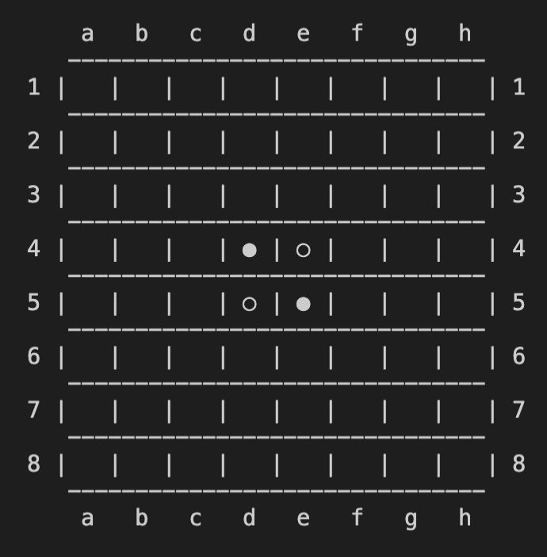

Stage 7 ゲーム進行をデザインする
7-1 初期設定する機能を実装する
さて、このステージでは UI をコーディングします。

うわ...意識高い系の言葉出てきたよ
お前こんな言葉使う奴だったの？
UI (user interface) とは、ざっくり言えばユーザーが扱うものです。
今までは (print など一部を除いて) コンピューターの中で情報をいじってくれる機能を作ってきました。しかしそれだけでは遊んでる人にとっては何が起こってるかわかりませんよね？

わかるような...わからんような...
例えばリバーシで遊んでる人が
board[row][col] = BLACKって操作を見て

ああ、このコンピューター今マス目に黒の石入れてるわ
ってならないでしょ？つまり今までの操作は基本的にユーザーには見えないものだったんです。
だからここからはユーザーに見えるものを作ろうってか
さすが、お察しの通りでございます。
~~~~~~~~~~~~~~~
とはいえ今回はほとんど UI は登場しません。というか、そもそもほとんどコーディングしません。
#! /usr/bin/env python3
# main.py
# programmed by Saito-Saito-Saito
# explained in https://Saito-Saito-Saito.github.io/reversi
# last update: 2/7/2020
from config import *
import IO
import board
# preset
logger = setLogger(__name__)
main_board = board.Board()
player = BLACK
main_board.BoardPrint()
while True:
### GAMESET JUDGE
# NOTE: you must not control game_status here because out of the loop it must be GAME_PRC
if main_board.gamesetjudge():
break
### PLAYER OUTPUT
if player == BLACK:
print('○ TURN', end=' ')
elif player == WHITE:
print('● TURN', end=' ')
else:
logger.error('UNEXPECTED VALUE of PLAYER in the while loop')
break
### PASS JUDGE
if main_board.passjudge(player):
print('BUT YOU CANNOT PUT ANYWHERE (PRESS ENTER TO PASS)')
input()
# player change
player *= -1
continue
### INPUT
print('(X to give up) >>> ', end='')
s = input()
# give up
if s in ['X', 'x']:
main_board.winner = -player
break
else:
square = IO.InputFormat(s)
logger.info('motion = {}'.format(square))
# invalid putting
if square == False:
print('INVALID INPUT')
continue
elif main_board.turn(player, *square) == FAILED:
print('INVALID PUTTING')
continue
### PLAYER CHANGE
player *= -1
main_board.BoardPrint()
print('\nGAME SET')
counter = main_board.countpiece()
# in case of give up
if main_board.game_status == GAME_PRC:
print('INTERRUPTION')
if main_board.winner == BLACK:
print('BLACK WINS')
elif main_board.winner == WHITE:
print('WHITE WINS')
else:
print('SYSTEM ERROR: DRAW')
# the other cases of game set
else:
counter = main_board.countpiece()
print('{} - {}'.format(counter[0], counter[1]))
if counter[0] == counter[1]:
print('DRAW')
elif counter[0] > counter[1]:
print('○ WINS')
elif counter[0] < counter[1]:
print('● WINS')
else:
logger.error('ILLOGICAL ATTITUDE out of the while loop')
print('\nGAME OVER\n')
なんだよ、フリかよクソ
いえいえ、今回実際にコーディングしてもらうのは、この main.py ファイルの while ループの手前まで、ここだけです。
from config import *
import IO
import board
# preset
logger = setLogger(__name__)
main_board = board.Board()
player = BLACK
main_board.BoardPrint()
なんだよフリか...じゃなかった
ホントにほとんどねーわ
ほら、言った通り。
~~~~~~~~~~~~~~~
まずいろんなファイルをインポートしてあげます。いつも通り config はコードの中で "config." ってつけなくていいようにしてください。
from config import *
import IO
import board
そしたらこのファイルの中で使うロガーを設定してあげましょう。
# preset
logger = setLogger(__name__)
その次に今まで頑張って拵えてきた Board クラスのインスタンスを作ってあげます。
main_board = board.Board()
初期設定の時は引数を入れなくていいように 3-1 で設定してありますので、ご安心を。
リバーシは黒が先手と相場が決まっていますので、player を BLACK にしてあげます。
player = BLACK
ここまで終わってもまだプレーヤーには盤面が見えていない状態です。一番最初の状態の盤面を見せてあげましょう。
main_board.BoardPrint()
これで一度ファイルを実行してみてください。
こうなっていたら完璧です。